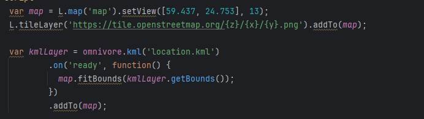
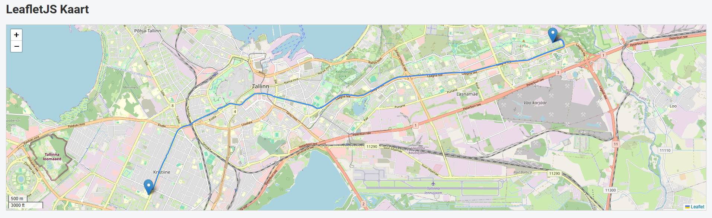
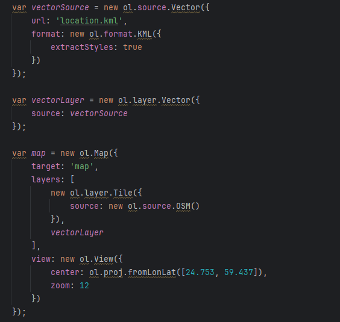
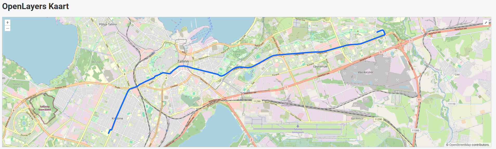

Kaarditeekide võrdlus ja praktiline kogemus
1. LeafletJS
Kasutamismugavus ja seadistamine: LeafletJS osutus töö käigus märgatavalt lihtsamaks ja intuitiivsemaks. Kaardi algseadistamine ning KML-faili laadimine nõudis väga vähe koodi ja oli loogiliselt mõistetav.

Funktsionaalsus ja laiendatavus: Täiendavate funktsioonide (näiteks skaalariba või koordinaatide kuvamise) lisamine käis vaid ühe koodireaga. Lisaks tegi teegi kasutamise mugavaks selle lai pistikprogrammide (pluginate) valik.
Visuaalne tulemus: KML-faili laadimisel kuvas LeafletJS kaardil korrektselt nii teekonna (joone) kui ka kõik täpsed punktid (markerid) ja kujundid ilma täiendava manuaalse stiilita.

2. OpenLayers
Kasutamismugavus ja seadistamine: OpenLayers nõudis kaardi käimasaamiseks ja KML-faili parsimiseks märgatavalt rohkem koodi ja keerukamat seadistamist (vektorkihid, allikad, projektsioonid jne).

Funktsionaalsus: Ehkki OpenLayersil on palju sisseehitatud tööriistu ja kontrolle, oli nende paigutamine ja seadistamine aeganõudvam. Funktsioonide ja elementide soovitud kohta saamiseks pidi tegelema rohkem CSS-i ning koodi kohandamisega.
Visuaalne tulemus: OpenLayers suutis samast KML-failist teekonna (joone) küll korrektselt kaardile kuvada, kuid KML-is määratud konkreetsed asukohapunktid ja markerid ei hakkanud vaikimisi õigesti tööle ega ilmunud kaardile nii nagu oodatud.
